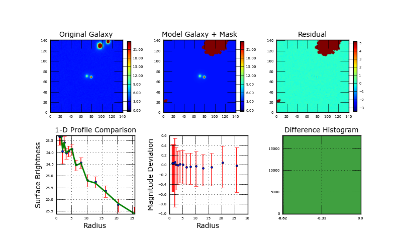

| One of the parameters |
| hits limit! |
| Image | 00000066_r_stamp.fits NED | RA | 9999 | ||||
|---|---|---|---|---|---|---|---|
| Init. par. file | G_r_00000066_r_stamp.in | Dec | 9999 | ||||
| Restart file | galfit.01 | z | 0.096405 | ||||
|
Separation between psf and image |
9999.0 arc sec | |||||
|  | |
||||||
|
| Component | Center (x) | Center (y) | Magnitude | Scale Radius (pixels) | Scale Radius (kpc) | n | Axis Ratio | Position Angle | Boxy/Disky |
|---|---|---|---|---|---|---|---|---|---|
| sersic bulge | 70.78 | 71.61 | 19.0059 | 2.226 | 1.555 | 4.042 | 0.9083 | 35.0518 | 0 |
| 0.02 | 0.02 | 0.0197 | 0.0705 | 0.049 | 0.2559 | 0.0204 | 7.5815 | 0 | |
| neighbor sersic | 79.11 | 73.59 | 18.6492 | 0.014 | 8.0771 | 0.9663 | 58.4163 | 0.0 | |
| 0.11 | 0.13 | 1.757 | 0.088 | 20.1987 | 0.6213 | 462.9125 | 0.0 | ||
| Concentration | Asymmetry | Clumpness | Gini Coefficient | M20 | B/D | B/T | MagInRe | ||
| 2.280 | 0.477 | 0.311 | 0.601 | -1.97 | -999 | 1.0 | 19.78 |